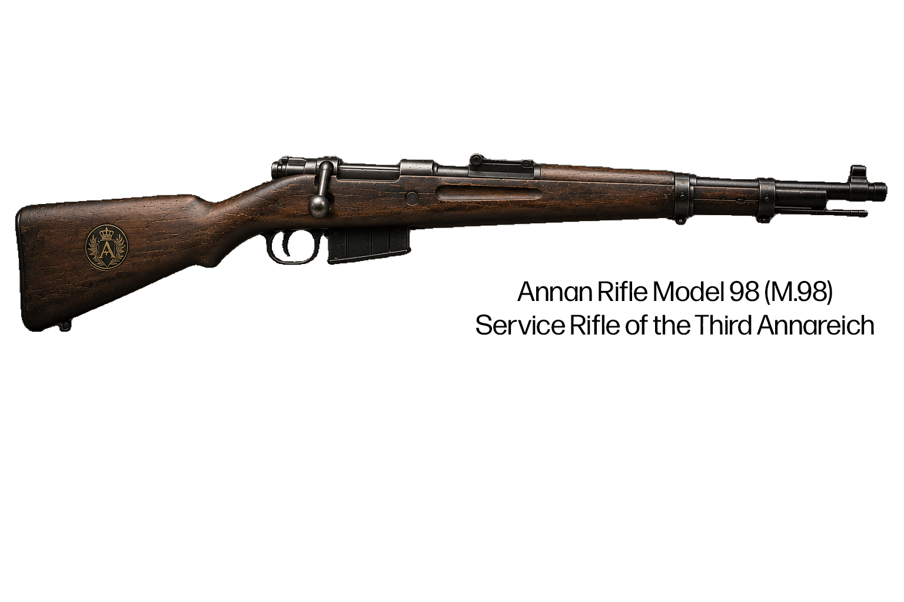

Following its independence from the crumbling Legolian Empire, Anna rapidly emerged as a dominant power in a world recovering from a prolonged dark age. Taking advantage of the weakness and disunity of neighboring states, Anna expanded its territory dramatically over the next eight years. Although Anna was ultimately defeated in the First Annan War, it took the combined strength of nearly every surrounding nation to halt its advance, cementing the Third Annareich's reputation as one of the most formidable powers of its age.
In the eight years following independence, Anna embarked on a campaign of rapid expansion unmatched in the post–Dark Age world. Annan forces conquered Robot Lands, large portions of northern Legolia, Swishria, Legolia, Aria, much of the southern UNSSR, and nearly half of Mapia. Driven by a belief in Annan superiority and a deep hostility toward Commonism in both its northern and southern forms, the Third Annareich sought to reshape the continent under its own political and cultural vision. By the eve of the First Annan War, Anna had become the largest and most feared power in the region.
Seeking to secure its eastern frontier, the Third Annareich reached an agreement with the USSSR to partition Mapia between the two nations. The arrangement, however, alarmed neighboring states, prompting Enknowledged Shlecklia and Papalia to declare war almost immediately. As the conflict expanded, Gamma entered the war in opposition to Anna, transforming a regional dispute into a continent-wide struggle. The alliance with the USSSR ultimately collapsed when Annan forces launched an invasion of their former partner, bringing the USSSR into the war against the Third Annareich and completing the coalition that would eventually bring about its defeat.
